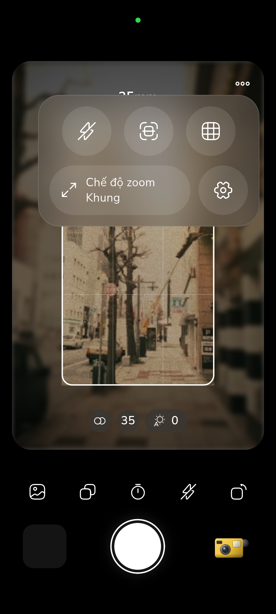

The Geometry of Cylindrical Glass and 2:1 Optical Squeeze
Standard photographic lenses employ rotationally symmetric spherical elements that treat light rays identically along both the horizontal and vertical axes. Anamorphic lenses break this symmetry by introducing cylindrical optical elements — glass surfaces curved along the horizontal plane while remaining completely flat along the vertical plane. This unique geometry bends incoming light rays horizontally by a factor of 2.0x, optically squeezing a broad panoramic view into a standard 35mm camera frame.
During theatrical projection or modern digital de-squeezing, the image is stretched back out to its native 2.39:1 aspect ratio. This process grants filmmakers an expansive field of view equivalent to a wide-angle lens along the horizontal axis, while preserving the shallow depth of field, natural perspective compression, and lack of facial distortion typical of a longer focal length along the vertical axis.

Internal Reflections, Lens Coatings, and Streak Mechanics
The iconic horizontal streak flares that have defined sci-fi cinema and prestige filmmaking are an inherent byproduct of cylindrical glass geometry. When an intense point source of light enters the front of the lens at an angle, light reflects back and forth between the air-glass boundaries of the curved cylindrical elements. Because the horizontal curvature acts as a continuous cylindrical mirror, the reflected light is focused into a razor-thin horizontal line stretching across the entire width of the frame.
The striking cobalt-blue hue of vintage anamorphic flares is determined by the anti-reflective chemical coatings applied to the glass elements. Vintage lenses from the 1960s used single-layer magnesium fluoride coatings designed to optimize transmission of warm light, causing unabsorbed high-frequency blue wavelengths to reflect internally and emerge as vibrant cyan streaks.

Shader-Based Optical Synthesis in RfCamera
Real anamorphic lenses weigh several kilograms and require specialized follow-focus gears. RfCamera simulates this cinema magic entirely inside a custom GLSL fragment shader running in real time at 60 frames per second. The shader isolates specular highlight pixels exceeding luminance threshold 0.85 and applies a directional 1D Gaussian kernel along the horizontal scanline.
Coupled with barrel distortion at the frame perimeter and oval bokeh weighting, RfCamera delivers genuine Hollywood anamorphic atmosphere directly to your phone screen — entirely offline, completely subscription-free, and requiring zero bulky glass adapters.
